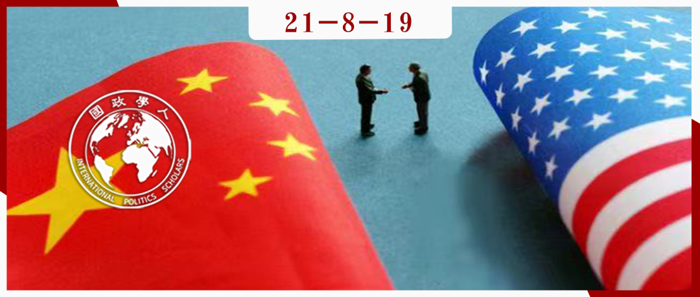

收录于合集 #中国外交 1个

作品简介
作者： Jonathan A. Chu，新加坡国立大学李光耀公共政策学院国际关系助理教授，主要研究方向为民主、治理和外交政策。
编译： 唐一鸣（国政学人编译员，北京大学国际关系学院研究生）
来源： Jonathan A Chu, Liberal Ideology and Foreign Opinion on China, International Studies Quarterly , 2021, sqab062, https://doi.org/10.1093/isq/sqab062
归档： 《国际关系前沿》2021年第8期，总第35期。

内容提要
为什么像中国这样的大国引起了一些国家公民的消极态度，而另一些国家却没有？本研究发现观念因素会产生明显的影响。本文观察到政府及其公民因意识形态形成共同体，其中最突出的是自由民主意识形态带来的差异。持该类观点的群体倾向于认为像中国这样的国家会对世界带来消极影响。此外，民主国家的公民会从自由民主规范的角度来评价中国。三项实证研究证实了自由民主意识形态影响了外国对中国的看法。研究结果推动了关于软实力、民主和舆论以及意识形态在国际社会中的作用的辩论。
文章导读
01
引言
中国崛起为超级大国对国际体系产生了巨大的影响。中国也一直在采取与其大国地位相称的行动，除了增加其在全球军事、经济和外交方面的存在外，在全球舆论方面也投入颇多。研究表明，国外的负面情绪会损害一国获得与他国合作和更广泛地推行其外交政策的能力；国际舆论也是一国软实力的重要组成部分。在全面战争代价异常高昂的核时代，通过依赖其他国家善意的、非强制性治国方略来促进国家利益的能力至关重要。中国也无法摆脱大众舆论的这些影响。
但人们对中国的看法差异显著。如何解释对中国全球影响力的这些不同看法？在国家层面，经济和安全利益等因素是原因之一，但本文表明，国家政治身份和意识形态的差异也有影响。自由民主作为一种国家意识形态，对政治共同体的形成有推动作用。一方面，来自自由民主国家的人们往往将中国视为一个外群体，从而对其做出相对负面的影响评估。另一方面，他们会从自由民主规范的角度来评估中国在国际政治中的作用。
三项实证研究支持这些说法。第一项研究表明，即使在考虑了潜在的混杂经济和安全因素之后，自由民主国家的公民也往往对中国抱有更多的负面看法。为了探索中国实践变化与自由民主的因果关系，第二项研究借鉴了在美国进行的一项原始调查实验，结果表明仅仅间接提及中国在自由民主实践方面的不良记录或改善记录也会影响美国人关于中国对美国利益影响的评估。第三项研究表明，对中国在自由民主价值观上的立场看法的冲击影响了日本的大众舆论。除了探索中国在当代世界政治中的作用，本文还推动了其他领域的政治学研究。首先，本文增加了关于国际关系中自由民主的微观基础的新兴研究。其次，该研究体现了数据收集和分析方面的一项重大工作。最后，本文有助于关于外国舆论和软实力在国际政治中的作用的学术和政策辩论。文章将国家意识形态确立为软实力的决定因素，从而突出了价值提升在外交政策中的潜在影响。
外国舆论与软实力
**
**
软实力允许政府通过拉拢和吸引而非完全通过胁迫来追求其利益，其中一个关键因素是外国舆论，比如反美主义或对于国家在国际体系中的作用有关的观念。当一个政府推行其外交政策时，国际社会的好感会为该过程增益，而敌对情绪会损害其国家利益。
现有研究表明，缺乏同情心的公众会促使软平衡（soft balance），即政府和公民采取非军事行动来破坏另一个国家的利益，因为政府的政策在某种程度上受到其选民的约束。在其他条件相同的情况下，各国更愿意其政策受欢迎，或者至少不会招致谴责。以中国为例，自20世纪90 年代以来，中国非常注重展现并谨慎维持和平崛起的大国形象，以避免被视为安全威胁。
02
论点
鉴于全球舆论的作用，有必要了解人们对中国持积极或消极看法的潜在原因。作者认为国内的政治意识形态和身份认同会影响其他国家如何看待中国。一个普遍的主张是，从全球舆论的角度衡量一个国家的软实力，这部分取决于它所属的社会群体。拥有相同群体身份的国家，例如认同自由民主等共同意识形态，将在彼此之间享有更大的软实力。
这个理论有社会心理学基础。研究表明，人们会产生一种渴望与他人相处的群体感或“我们”（we- ness），这种社会认同会影响人们如何看待彼此并与之互动。此外，人们常偏爱群体中的其他成员，倾向于向其分配更多资源。另一方面，敌意和价值观分歧会加重其对群体外成员（out- group）的威胁感知和负面刻板印象的看法。无论是在个人还是国家层面，社会群体都在塑造成员如何看待和区分自己人和外人。
自由民主作为全球社会分割线
**
**
群体的形成可以在许多方面发生，例如种族、性别、宗教和政党。在当代世界政治领域，一个国家对自由民主的意识形态承诺是“民主世界”的门槛。该群体内的国家不仅需要采用民主制度，还需要有对自由价值观的承诺。民主和非民主世界之间的差异随着时间的推移而出现。冷战助长了这种分裂，美苏之间的地缘政治斗争可能源于物质利益，但双方都宣扬这样一种世界观，即世界政治是民主和共产主义之间的斗争。这些精英倡导的观点最初是掩盖更难的、非意识形态的国家利益的虚言，但它们在国内规范逐渐扎根，在冷战结束后仍然持续。例如，有学者将中美之间的竞争定义为一场价值观之争。
事实上，学者们观察到，自由民主国家将自己视为一个连贯的国家共同体，而将不同于西方的非自由、非民主国家视为群体外的其他国家（out-group others）。一些人认为，这种“我们”与“他们”的区别导致民主国家的公民将外部成员视为在国际政治中更具威胁性。另一方面，一些“非民主”国家也结成联盟，共享基于马克思列宁主义学说的共产主义意识形态。一些学者认为，民主体制和共享的自由民主价值观会影响个人对战争的看法。在精英层面，民主规范同样会影响安全方面的外交政策偏好。总之，自由民主国家社会共同体的存在意味着其公民比非自由民主国家的公民对中国的看法更消极，他们认为中国更加伤害了他们的国家和世界（研究1）。此外，他们将根据中国对民主价值观的尊重来更新他们对中国的态度。虽然中国保留了一党制政府，但随着时间的推移，中国在允许和尊重公民自由方面发生了变化。因此，在对中国致力于民主价值观和（非）自由主义实践的看法上的转变也会影响大众情绪（研究2和3）。
最后，作者澄清这里提出的理解全球观点的社会方法并不排除经济和安全方面的考虑。人们倾向于认为与属于同一群体的人交往比与来自群体外的人交往在物质上获得更多。此外，人们还可能认为群体外成员更具威胁性。然而，与之前研究的主要区别在于，本文认为作为群体归属基础的共同意识形态具有其自身的独立作用，而不仅仅是先前硬实力因素的副产品。一些现有研究强调了民主、人权和国家意识形态对舆论的潜在影响，但主要关注的是在特定年份的单个国家或地区，且并不适合检验自由民主的因果关系。
03
研究设计概览
本文检验了两个核心主张。首先，与非自由民主国家相比，自由民主国家的国内公众倾向于认为中国对世界事务具有消极影响。第二，民主国家的公众从自由规范的角度看中国对自由民主价值观和实践的承诺的不断变化，因而其看法有所不同。
研究1通过在观察数据中建立民主意识形态与外国舆论对中国全球影响力的统计相关性来检验第一个主张，涵盖多个国家案例。
研究2和3检验第二个观点。研究2通过对美国成年人的调查实验，以了解有关中国自由民主实践（或缺乏自由民主实践）的隐含质数如何影响他们对中国的看法，即中国有助于或有损于美国利益。研究3转向日本，通过历史观察数据进行检验，评估20世纪政治风波对日本关于中国尊重自由价值观的看法的冲击，该研究使用 DD（differencein-differences）分析来确定自由民主如何影响国际舆论。
研究1：全球对中国的看法
**
**
第1项研究通过分析2006年至2014年45 个国家/地区的公民对中国看法的数据集来评估自由民主的影响。民意调查询问公民是否认为中国“对世界产生了主要是积极的影响还是主要是消极的影响”。图1可视化了自由民主和中国观点之间的相关性。每个变量在每个国家所有可用数据的年份中取平均值，在散点图中绘制观测值并覆盖一条LOWESS线。在沙特阿拉伯、阿富汗和俄罗斯等最不自由民主的国家中，自由民主与舆论之间几乎没有关系。但是从自由民主程度得分为7的国家开始，一个国家的自由民主程度越高，其公民关于中国对世界影响的负面看法就越多。
图1
分析的下一步考虑了可能混淆自由民主和看法之间关系的因素后，对这种相关性是否仍然存在进行检验。从经济和人口因素开始，第一个控制变量是Log GDPPC。这是衡量一国经济发展的常用指标，既与民主相关，也与一个国家的经济发展水平可能与其公民对全球化的看法相关（特别是与中国等国家的经济关系）。研究还添加了对数人口作为控制变量，因为学者们长期以来假设人口规模会影响民主的可行性，较小的国家可能对中国作为一个正在崛起的超级大国日益扩大的全球影响力特别敏感。其次，贸易依存度被衡量为一个国家在与中国的贸易总额中的比例。该模型还考虑了三个安全因素：US Ally或US是一个二元变量，表示该国家是与美国共享进攻或防御联盟，或者是美国自身；其次，领土争端反映一个国家是否与中国有或曾经有冲突的领土主张。最后，地理距离是衡量一个国家与中国之间最近边界距离的变量。一个国家与中国的地理距离可能会影响其感知到的中国的威胁，并通过扩散影响它的（非）民主程度。
所有模型都包含按国家/地区聚类的标准误差，一些回归还指定了地区和年份的固定效应，以解释混淆自由民主与人们态度之间关系的地理和时间因素。在地理方面，欧洲等地区在民主和民主化方面的历史经验不同，而非洲地区与中国有不同的关系，这会影响公众对中国全球影响力的看法。时间因素中，某一年可能会经历对全球民主的冲击，这也可能影响对中国的看法。图2表明，与图1一致，居住在更自由民主国家的公民以更消极的眼光看待中国的影响力。指定固定效应和控制变量会减少但不会消除自由民主方面的影响。
图2
随后的问题是自由民主意识形态的影响是个人自由因素还是选举和政治制度因素的结果。“自由之家”数据库中有对不同国家的公民自由（对各种自由价值观的尊重）和政治权利（选举制度）的打分（选举制度）。下一项分析使用与图 2 报告的固定效应模型相同的OLS估计选举制度和公民自由对舆论的影响。图3（上）显示了中国在不同公民自由水平下的预测意见，将选举制度和所有控制变量保持在平均值，而图3（下）则相反。图表显示，公民自由得分与亲中国观点的40%的差异有关。相比之下，选举制度对舆论的影响就大致保持不变。
图3
总体而言，研究1表明，生活在相对自由民主国家的公民（而不仅仅是那些有选举制度的国家）对中国对世界的影响持更批判的观点。尽管回归分析解释了重大的军事和经济混杂因素，但批评者可能仍认为许多其他因素会影响国家意识形态和舆论之间的相关性，接下来的两项研究解决了这些问题。
研究2：美国人对中国的看法
**
**
通过对美国人进行的一项调查实验，该研究回答了美国人了解中国对自由民主原则的尊重是否会影响其对中国的态度的问题。在调查中，受访者回答了两个问题，问题1为：“以下是中国最近的一些趋势。你可能听说过一些，但没有听说过其他的，选择你听说过的那些。”然后，这个问题让调查者可以从三个趋势中进行选择，问题之一是有关中国自由主义/非自由主义的表述，另两个选项则与经济、军事相关，其中“隐含”了自由主义/非自由主义因素。第一个问题及其选项向受访者传递了实验刺激，这是一种让受访者了解中国特色的极其谨慎的方法。第二个问题则是询问受访者如何看待中国对美国国家利益的影响。图4体现了中国的民主自由实践对美国人对中国看法的影响。实验表明，关于中国尊重自由民主价值观的看法改变了美国对中国全球影响力的评价。
图4
在研究1和研究2中，自由民主（或缺乏民主）导致对中国的消极态度这一事实说明了结果的稳健性。然而，人们可能想知道，这种因果效应是否可以在调查实验环境之外找到，并且是否可以在西方民主背景之外推广。研究3中的日本案例解决了这些问题。
研究3：日本人对中国的看法
**
**
日本国内普遍存在反华情绪。其原因一方面可以追溯到二战甚至之前的历史仇恨，而另一方面则与始于上世纪90年代的各种海上冲突有关。
为了更好地理解日本历史上对中国的态度，尤其是关于自由民主的作用，本研究分析了自20世纪70年代后期以来在日本进行的一系列民意调查，追踪了日本人随着时间而变化的情绪，并观察其对中国改变自由民主立场的反应。该分析将中国在20世纪政治风波中的行动视为对日本民众的冲击，然后进行DD分析以估计这种冲击对其观点的影响。
在冷战的大部分时间里，中国的国际形象是一个共产主义国家，是“自由民主世界”的局外人。然而，随着北京在70、80年代的自由化，其政治开放也随之而来，导致与日本等民主国家的关系升温。在国内政治领域，中国也实现了自由化：公民在言论自由和民主问题上获得了相对更大的公民自由。但政治风波后事情发生了转折。图5显示了日本人对中国看法的变化。分析的下一步将通过进行DD回归正式评估因果关系并估计该事件对日本舆论的影响大小。DD分析做出三个主要假设。首先，冲击被正确解释并且没有与共线事件/冲击混淆。其次，不存在反向因果关系。第三，实验组和对照组表现出共同或平行的趋势。为了便于对此进行研究，附录报告了1978年至1988年的亲中/美国情绪，数据表明，在预处理时间范围内，其态度趋势非常相似。图6显示了使用三个不同时间范围进行分析的回归结果。它表明，这场政治风波导致日本亲中国的看法下降。总而言之，研究3发现自由民主与日本对中国的看法之间存在因果关系。
图5
图6
正如本节引言中提到的，这些结果解答了日中关系的两个问题。一方面，日本人目前对中国的敌意并不是根深蒂固的、数百年历史仇恨的结果，也不是最近海上冲突的唯一产物。鉴于那场政治风波早于 1990 年代后期中国的经济和军事繁荣，因此经济和军事因素无法解释这一时期的舆论暴跌。由此可以推断，引发更广泛的社会敌意的国家争端可能会因彼此国内政治制度和意识形态上的根本差异而有所缓和。
04
结论
通过证明“自由民主”意识形态会影响全球对中国的看法，本文作出了五个主要贡献。首先，文章增加了有关外国舆论和软实力研究的文献。本文提出了新的观点：植根于共同政治意识形态的社会群体可以成为一个国家全球影响力的基础。其次，文章通过将政治意识形态（即自由民主）与国家层面的社会认同和群体形成联系起来，并在全球舆论领域阐述了这种联系的经验含义，做出了理论贡献。第三，文章做了一项重要的数据收集工作，检验了国际关系中的一个核心问题：政治意识形态是否独立于传统权力和物质因素，对国家间关系产生因果影响？根据跨国分析和允许因果识别的两种不同的实验，答案是肯定的。第四，学者指出，国际关系研究缺乏针对东亚案例的研究，尤其是有关安全问题的定量分析。通过考察日本对中国的看法，本文不仅满足了这些学者分析东亚的呼吁，而且有助于确立自由民主的影响不仅仅是一种西方的、跨大西洋的现象。第五，这些发现有助于关于国际关系中民主微观基础的新兴议程研究。
自由主义价值观影响全球舆论的结论也会产生政策影响。鉴于中国长期以来一直不满西方对其政治事务的不断批评，本文提供了一些方向。它表明，中国的经济和军事崛起并不是影响其软实力的唯一因素。相反，对中国的怀疑似乎在很大程度上源于其国内政治意识形态。
最后，中国或任何其他新兴大国能否“让世界爱上它”，会影响其为二战后的自由秩序提供有吸引力的替代方案的能力。然而，当前秩序的持久遗产之一是，想要在全球舆论上挑战它的政治行为体（如中国）必须遵守其规则。这一发现警示当今民主国家的领导人：放弃自由主义价值观不仅会牺牲其国内事务，还会牺牲其外交政策的强大力量来源。此外，如果美国作为当今的超级大国想要挑战中国，它应该加倍致力于国际社会的民主价值观建设。
译者评述
本文将国家意识形态确立为软实力的决定因素，并通过这样做突出了价值提升在外交政策中的潜在影响。一般认为，中国在崛起过程中表现出的强大经济和军事力量是引发其他国家对其持消极态度的主要因素，本文通过三个实证研究证明国家在政治身份和意识形态上的区别也是重要的影响因素，甚至是独立于经济、军事等物质因素而存在的决定因素。文中三项研究设计环环相扣，有创新之处：除了利用现有的以国家为单位进行假设的实验研究之外，作者还考虑到案例和时间的覆盖范围，设计了具有观察性、实验性和准实验性的研究。
纵观全篇，作者并未跳出“自由民主世界”的视角来看待中国的崛起，依然站在西方的立场上进行发言，并且在其研究中对“自由民主”的定义、评价标准等未作出自己的解释。但本文对中国外交工作具有一定的启发意义，自由民主在面临来自中国的“外来挑战”时可以成为民主国家强大的外交力量来源，相比之下，中国如何将已有的文化、价值观资源转化为外交资源，还需要进行仔细地斟酌。
词汇整理
soft balance 软平衡
On the flip side 另一方面
Confounding 混淆的
quasi-experimental 准实验
anti-Americanism 反美主义
Bluntly put 说白了
责编 | 朱家羲 徐一君 朱文菡
排版 | 林祉欣 云琪布日
文章观点不代表本平台观点，本平台评译分享的文章均出于专业学习之用, 不以任何盈利为目的，内容主要呈现对原文的介绍，原文内容请通过各高校购买的数据库自行下载。
好好学习，天天“在看”
国政学人
支持学术公益与知识传播
微信扫一扫赞赏作者 __赞赏
已喜欢，对作者说句悄悄话
取消 __
发送给作者
发送
最多40字，当前共字
上一页 1/3 下一页
长按二维码向我转账
支持学术公益与知识传播
受苹果公司新规定影响，微信 iOS 版的赞赏功能被关闭，可通过二维码转账支持公众号。